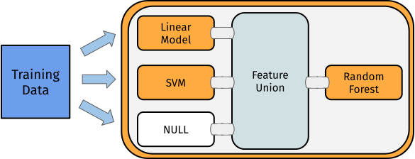

4.5 Non-Linear Graphs
The Graphs seen so far all have a linear structure. Some POs may have multiple input or output channels. These channels make it possible to create non-linear Graphs with alternative paths taken by the data.
Possible types are:
- Branching: Splitting of a node into several paths, e.g. useful when comparing multiple feature-selection methods (pca, filters). Only one path will be executed.
- Copying: Splitting of a node into several paths, all paths will be executed (sequentially). Parallel execution is not yet supported.
- Stacking:
Single graphs are stacked onto each other, i.e. the output of one
Graphis the input for another. In machine learning this means that the prediction of oneGraphis used as input for anotherGraph
4.5.1 Branching & Copying
The PipeOpBranch and PipeOpUnbranch POs make it possible to specify multiple alternative paths.
Only one path is actually executed, the others are ignored.
The active path is determined by a hyperparameter.
This concept makes it possible to tune alternative preprocessing paths (or learner models).
Below a conceptual visualization of branching:

PipeOp(Un)Branch is initialized either with the number of branches, or with a character-vector indicating the names of the branches.
If names are given, the “branch-choosing” hyperparameter becomes more readable.
In the following, we set three options:
- Doing nothing (“nop”)
- Applying a PCA
- Scaling the data
It is important to “unbranch” again after “branching,” so that the outputs are merged into one result objects.
In the following we first create the branched graph and then show what happens if the “unbranching” is not applied:
graph = po("branch", c("nop", "pca", "scale")) %>>%
gunion(list(
po("nop", id = "null1"),
po("pca"),
po("scale")
))Without “unbranching” one creates the following graph:
graph$plot(html = FALSE)Now when “unbranching,” we obtain the following results:
(graph %>>% po("unbranch", c("nop", "pca", "scale")))$plot(html = FALSE)The same can be achieved using a shorter notation:
# List of pipeops
opts = list(po("nop", "no_op"), po("pca"), po("scale"))
# List of po ids
opt_ids = mlr3misc::map_chr(opts, `[[`, "id")
po("branch", options = opt_ids) %>>%
gunion(opts) %>>%
po("unbranch", options = opt_ids)## Graph with 5 PipeOps:
## ID State sccssors prdcssors
## branch <<UNTRAINED>> no_op,pca,scale
## no_op <<UNTRAINED>> unbranch branch
## pca <<UNTRAINED>> unbranch branch
## scale <<UNTRAINED>> unbranch branch
## unbranch <<UNTRAINED>> no_op,pca,scale4.5.2 Model Ensembles
We can leverage the different operations presented to connect POs. This allows us to form powerful graphs.
Before we go into details, we split the task into train and test indices.
task = tsk("iris")
train.idx = sample(seq_len(task$nrow), 120)
test.idx = setdiff(seq_len(task$nrow), train.idx)4.5.2.1 Bagging
We first examine Bagging introduced by (Breiman 1996). The basic idea is to create multiple predictors and then aggregate those to a single, more powerful predictor.
“… multiple versions are formed by making bootstrap replicates of the learning set and using these as new learning sets” (Breiman 1996)
Bagging then aggregates a set of predictors by averaging (regression) or majority vote (classification). The idea behind bagging is, that a set of weak, but different predictors can be combined in order to arrive at a single, better predictor.
We can achieve this by downsampling our data before training a learner, repeating this e.g. 10 times and then performing a majority vote on the predictions. Graphically, it may be summarized as follows:

First, we create a simple pipeline, that uses PipeOpSubsample before a PipeOpLearner is trained:
single_pred = po("subsample", frac = 0.7) %>>%
po("learner", lrn("classif.rpart"))We can now copy this operation 10 times using pipeline_greplicate.
The pipeline_greplicate allows us to parallelize many copies of an operation by creating a Graph containing n copies of the input Graph.
We can also create it using syntactic sugar via ppl():
pred_set = ppl("greplicate", single_pred, 10L)Afterwards we need to aggregate the 10 pipelines to form a single model:
bagging = pred_set %>>%
po("classifavg", innum = 10)Now we can plot again to see what happens:
bagging$plot(html = FALSE)This pipeline can again be used in conjunction with GraphLearner in order for Bagging to be used like a Learner:
baglrn = as_learner(bagging)
baglrn$train(task, train.idx)
baglrn$predict(task, test.idx)## <PredictionClassif> for 30 observations:
## row_ids truth response prob.setosa prob.versicolor prob.virginica
## 6 setosa setosa 1 0 0
## 8 setosa setosa 1 0 0
## 12 setosa setosa 1 0 0
## ---
## 137 virginica virginica 0 0 1
## 140 virginica virginica 0 0 1
## 147 virginica virginica 0 0 1In conjunction with different Backends, this can be a very powerful tool.
In cases when the data does not fully fit in memory, one can obtain a fraction of the data for each learner from a DataBackend and then aggregate predictions over all learners.
4.5.2.2 Stacking
Stacking (Wolpert 1992) is another technique that can improve model performance. The basic idea behind stacking is the use of predictions from one model as features for a subsequent model to possibly improve performance.
Below an conceptual illustration of stacking:

As an example we can train a decision tree and use the predictions from this model in conjunction with the original features in order to train an additional model on top.
To limit overfitting, we additionally do not predict on the original predictions of the learner.
Instead, we predict on out-of-bag predictions.
To do all this, we can use PipeOpLearnerCV .
PipeOpLearnerCV performs nested cross-validation on the training data, fitting a model in each fold.
Each of the models is then used to predict on the out-of-fold data.
As a result, we obtain predictions for every data point in our input data.
We first create a “level 0” learner, which is used to extract a lower level prediction.
Additionally, we clone() the learner object to obtain a copy of the learner.
Subsequently, one sets a custom id for the PipeOp .
lrn = lrn("classif.rpart")
lrn_0 = po("learner_cv", lrn$clone())
lrn_0$id = "rpart_cv"We use PipeOpNOP in combination with gunion, in order to send the unchanged Task to the next level.
There it is combined with the predictions from our decision tree learner.
level_0 = gunion(list(lrn_0, po("nop")))Afterwards, we want to concatenate the predictions from PipeOpLearnerCV and the original Task using PipeOpFeatureUnion :
combined = level_0 %>>% po("featureunion", 2)Now we can train another learner on top of the combined features:
stack = combined %>>% po("learner", lrn$clone())
stack$plot(html = FALSE)stacklrn = as_learner(stack)
stacklrn$train(task, train.idx)
stacklrn$predict(task, test.idx)In this vignette, we showed a very simple use-case for stacking. In many real-world applications, stacking is done for multiple levels and on multiple representations of the dataset. On a lower level, different preprocessing methods can be defined in conjunction with several learners. On a higher level, we can then combine those predictions in order to form a very powerful model.
4.5.2.3 Multilevel Stacking
In order to showcase the power of mlr3pipelines, we will show a more complicated stacking example.
In this case, we train a glmnet and 2 different rpart models (some transform its inputs using PipeOpPCA ) on our task in the “level 0” and concatenate them with the original features (via gunion).
The result is then passed on to “level 1,” where we copy the concatenated features 3 times and put this task into an rpart and a glmnet model.
Additionally, we keep a version of the “level 0” output (via PipeOpNOP) and pass this on to “level 2.”
In “level 2” we simply concatenate all “level 1” outputs and train a final decision tree.
In the following examples, use <lrn>$param_set$values$<param_name> = <param_value> to set hyperparameters
for the different learner.
library("magrittr")
library("mlr3learners") # for classif.glmnet
rprt = lrn("classif.rpart", predict_type = "prob")
glmn = lrn("classif.glmnet", predict_type = "prob")
# Create Learner CV Operators
lrn_0 = po("learner_cv", rprt, id = "rpart_cv_1")
lrn_0$param_set$values$maxdepth = 5L
lrn_1 = po("pca", id = "pca1") %>>% po("learner_cv", rprt, id = "rpart_cv_2")
lrn_1$param_set$values$rpart_cv_2.maxdepth = 1L
lrn_2 = po("pca", id = "pca2") %>>% po("learner_cv", glmn)
# Union them with a PipeOpNULL to keep original features
level_0 = gunion(list(lrn_0, lrn_1,lrn_2, po("nop", id = "NOP1")))
# Cbind the output 3 times, train 2 learners but also keep level
# 0 predictions
level_1 = level_0 %>>%
po("featureunion", 4) %>>%
po("copy", 3) %>>%
gunion(list(
po("learner_cv", rprt, id = "rpart_cv_l1"),
po("learner_cv", glmn, id = "glmnt_cv_l1"),
po("nop", id = "NOP_l1")
))
# Cbind predictions, train a final learner
level_2 = level_1 %>>%
po("featureunion", 3, id = "u2") %>>%
po("learner", rprt, id = "rpart_l2")
# Plot the resulting graph
level_2$plot(html = FALSE)task = tsk("iris")
lrn = as_learner(level_2)And we can again call .$train and .$predict:
lrn$
train(task, train.idx)$
predict(task, test.idx)$
score()## classif.ce
## 0.1667References
Breiman, Leo. 1996. “Bagging Predictors.” Machine Learning 24 (2): 123–40.
Wolpert, David H. 1992. “Stacked Generalization.” Neural Networks 5 (2): 241–59. https://doi.org/https://doi.org/10.1016/S0893-6080(05)80023-1.